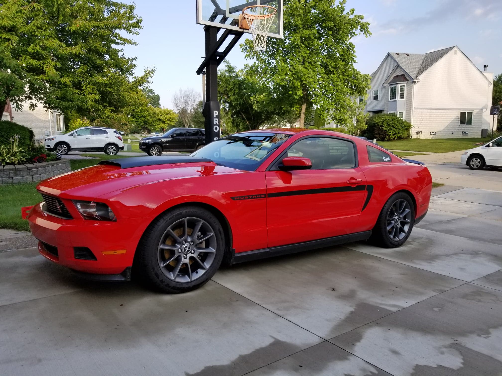
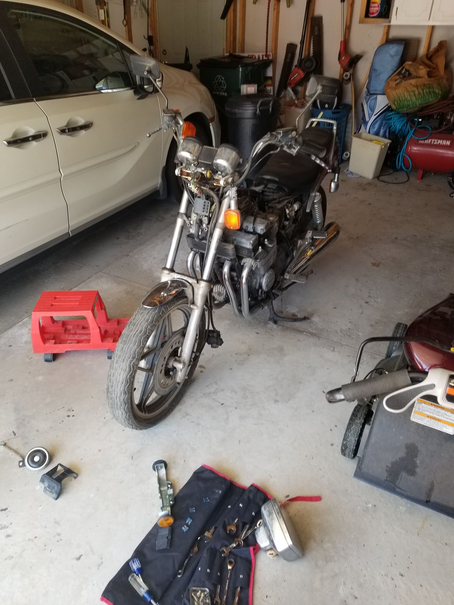
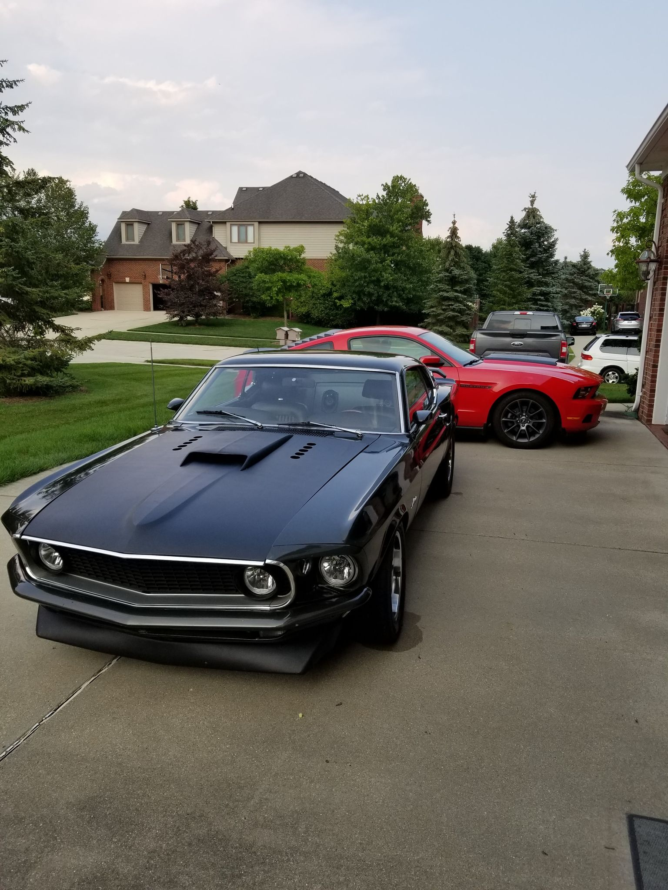

Cameron Havlish
Hello and welcome to Camerons Car Blog! I am excited to share my experiences and updates on my various projects with you guys. Before I get into specifics let me first explain what this site is about and what kind of stuff you can expect to see here. This blog is mainly focused around my various projects be they cars or motorcycles and to document what I have been doing with them. I will also be posting pictures and videos from various events that I attend such as cars and coffee, MSU racing club meets, or the Woodward Dream Cruise. Now to introduce my projects, I won't be getting into specifics until the next blog post but here is a short intro for each.

This is my 2012 Ford Mustang, its got the most modifications out of all the other projects and will most likely be showcased the most.

Next up is my 1983 Honda CB550 Nighthawk. This is the biggest project of the group as it does not currently run and needs the most work out of all of them. Last is my 2001 Honda Oddyssey which I do not currently have a photo. This one probably won't make too many appearances since I only work on it to keep it running and it's so reliable I rarely have to do anything with it. But thats all of them for now, I hope you guys have enjoyed getting to know a little bit about the blog and the projects you will be reading about. Next post I will go into more detail about each project, see you then!
| Model Year | Model |
|---|---|
| 2012 | Ford Mustang |
| 1983 | Honda CB550 Nighthawk |
| 2001 | Honda Odyssey |
Cameron Havlish
Hello everyone reading, I am Cameron Havlish and welcome to the second post of Camerons Car Blog! This post I am gonna go into a bit more detail about each project, go into what they've had done to them and what they need done to them. To start of the projects is my 2001 Honda Oddyssey, a bit of background on this car, it's been in my family since it was bought back in 2001 by my mom. She drove it for about 18 years and then passed it on to me for my first car. I've since driven it for the past three years and have gotten it up to about 270,000 miles. During that time it's gone through a transmission and almost had the engine sieze when the radiator blew up but other than that it has been a very reliable car that can haul mostly anything you need to and requires very little maintenance.

Next up is the Mustang, it's a 2012 V6 (I know, I know, could've had a V8) with about 76,000 miles on it of which I've only put on about 4,000 or so. It's been a great car to really learn how to wrench on not just do maintenance work on but actually modify to make better. Currently this is all of the work that has been done to it.
Most likely that is all I will do to it since most further modifications would require either a ton of money or a new tune which would basically require me to go to 93 octane which is a little too expensive right now. Last but not least is the 1983 Honda Nighthawk. It has 10,000 original miles, I bought it for about $450 since it does not run and hasn't run in 10 years and I have been slowly getting it ready to get back on the road. Here is a list of what it currently needs done to it.
Since I have gotten I have gotten a new key for it, rebuilt the carburetors, installed a new master cylinder, took off the old brakes and got new calipers, changed the oil, and got a new air filter. It's been a challenging process as I have never worked on a motorcycle before and I haven't taken on a project this big before but it has been a great learning experience and I am excited to post when I get it to run. Well thats everything in terms of my projects currently, thank you all for reading and i'll see you in the next post!